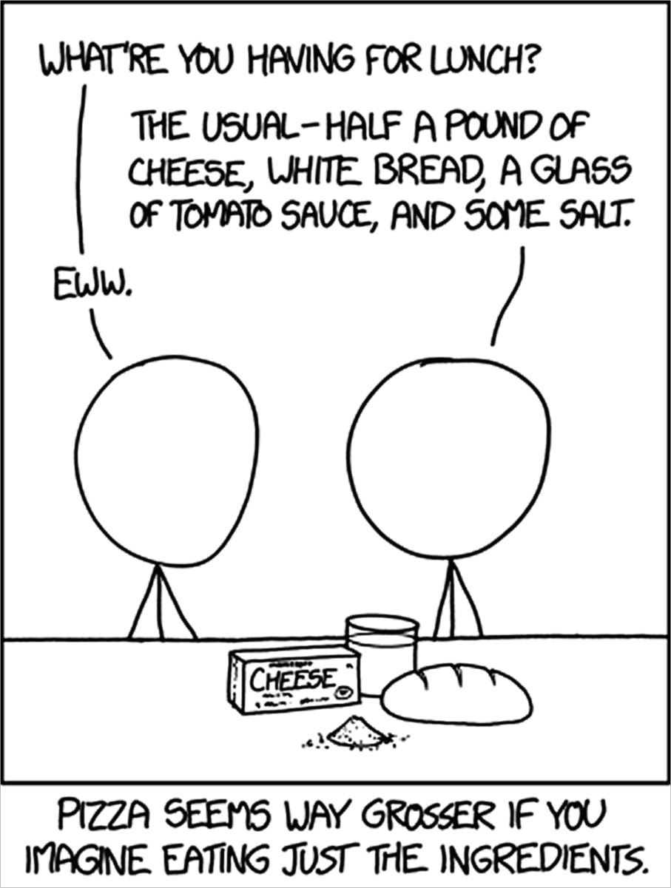

3.7 Bachelor Chemie
Herzlich willkommen an der Uni Bayreuth. Du hast dich also für ein Studium im Bereich der Chemie entschieden. Dann möchten wir dir einmal erzählen, was so alles in der nächsten Zeit auf dich zukommen wird.
Die erste Veranstaltung in deinem ersten Semester an der Universität hast du bereits hinter dir: der Mathe-Vorkurs. Dieser diente vor allem dazu, die Grundlagen nochmals zu wiederholen. Aber keine Sorge, wenn du ihn verpasst hast. In der ersten Mathe-Vorlesung kommt alles nochmal im Schnelldurchgang.
Im ersten Semester hast du natürlich die Grundlagenvorlesungen Anorganische Chemie I (AC I) und Physikalische Chemie I (PC I) sowie die Nebenfächer Mathe I und Physik. Zusätzlich zur Physikvorlesung gibt es ein Praktikum, das in Kleingruppen absolviert wird. Neben einer Reihe von Versuchen zu verschiedensten Themen, die teilweise auch über den Stoff der Vorlesung hinausgehen, lernst du hier vor allem die Grundlagen der Fehlerrechnung.
Zitat für Zwischendurch:
NaCl + H2O -> HCl + NaOH
Eine anonyme Studentin
Auch zu AC I wirst du ein Praktikum absolvieren müssen, für das die Studis auf das gelbe und das blaue Labor verteilt werden. In diesen Laboratorien befindet sich dein Arbeitsplatz (= Bench, engl. für Labortisch), an dem du deine Lebenszeit mit spannenden Titrationen verbringen darfst. Bei beiden Praktika muss wöchentlich ein Protokoll abgegeben werden, in dem die Arbeit beschrieben und daraus Schlussfolgerungen gezogen werden sollen. Nur keine Angst davor: aller Anfang ist schwer aber mit der Zeit fällt es dir erfahrungsgemäß deutlich leichter, diese zu schreiben.😉 Spätestens zur Abschlussarbeit wirst du dankbar sein, etwas Übung im Formulieren von wissenschaftlichen Texten zu haben.
Zitat für Zwischendurch:
“Ziel dieser Vorlesung ist die Homogenisierung Ihrer heterogenen Vorbildung.”
Dozentin über die Vorlesung AC 1
❗Was du unbedingt noch zu den Veranstaltungen wissen musst❗: Für Praktika und Seminare herrscht Anwesenheitspflicht. Also Termin in den Kalender eintragen und pünktlich dort auftauchen! Im Gegensatz dazu ist der Besuch von Vorlesungen und den Ãœbungen freiwillig. Es lohnt sich aber, hinzugehen, da es den Vorbereitungsaufwand für die Klausuren drastisch reduzieren kann. Vor allem die Ãœbungen bringen dahingehend viel. Dort wird der Vorlesungsstoff an Beispielen nochmals aufgearbeitet und du kannst die Betreuer mit Fragen löchern, solltest du etwas nicht verstanden haben. Ansonsten hilft dir sicher ein Zitat von Herrn Prof. Kempe weiter:
“Wenn Sie etwas nicht verstanden haben, nehmen Sie ein Buch und lesen Sie es dort nach. Reicht das immer noch nicht, nehmen Sie das nächste zur Hand. Das machen Sie so lange, bis sie den Stapel durch Haben. Wenn Sie es dann immer noch nicht verstanden haben, beginnen sie wieder bei Buch eins.”
Prof. Kempe
Mit diesem Ratschlag und den Übungen solltest du am Semesterende ganz gut auf die Klausuren vorbereitet sein. Und mach dir erst gar keine Hoffnungen darauf, du könntest diese irgendwie umgehen. Die Klausuren bilden nämlich den Abschluss der jeweiligen Vorlesungsmodule und liefern die Note, die du für deinen Abschluss benötigt.
Wenn du zusätzlich zu Vorlesungsskripten auf Bücher zurückgreifen möchtest, diese sind in ausreichender Zahl in der Teilbibliothek NW I vorhanden. Es lohnt sich nämlich kaum, bereits im ersten Semester eine kleine (oder große) Büchersammlung anzulegen, da viele von den Büchern, die in den Vorlesungen genannt werden, nur einmal gebraucht werden und dann meistens auch nur ein Kapitel davon relevant ist.😣
Zitat für Zwischendurch:
“Wer am lautesten schreit, hat am meisten Recht …”
Mitglied der Fachschaft
Das einzige Material, das du für dein Studium brauchst und bei dem du auch nicht an einem Kauf vorbeikommst, ist der Laborkittel.🥼 Dieser ist in allen Chemiepraktika verpflichtend, da er dich vor den “gefährlichen†Chemikalien und anderen Widrigkeiten des Dschungels schützt. Kittel gibt es im Online-Shop oder bei uns im Fachschaftszimmer (für nur 13 Euro).
Für jedes Praktikum solltest du außerdem versichert sein, falls doch mal was zu Bruch geht! Aus diesem Grund wird zu Beginn der meisten Praktika ein schriftlicher Nachweis einer Haftpflichtversicherung verlangt.

Im zweiten Semester wird dann noch einmal richtig nachgelegt: Einerseits wird eure Nebenfachausbildung mit Mathe 2 und Biochemie 1 abgeschlossen. Andererseits habt ihr eure zweiten Vorlesungen in AC und PC. In letzterem habt ihr auch ein Praktikum, wo ihr euch die Termine frei einteilen könnt – frühes fertig sein lohnt sich meistens, um Überschneidungen zu verhindern. Außerdem habt ihr auch eure Grundlagenvorlesung in der Organischen Chemie und das dazugehörige Praktikum. Vor allem diese Klausur sorgt häufig für schlechte Noten und hohe Durchfallquoten. Zu allen Vorlesungen gehen,alle Übungen machen und beim Lernen früh anfangen (am besten in einer kleinen Gruppe) und alle Altklausuren lösen hilft. Übrigens solltet ihr diese Tipps auch bei allen anderen Vorlesungen anwenden, dann kann nichts schiefgehen 😉.
Zitat für Zwischendurch:
Klausuraufgabe AC 2: Na + H2O -> ???
Antwort eines Studierenden: “Das Natrium wird nass …”
Was vielen gerne auch erst gegen Ende des Bachelorstudiums “einfällt†ist, dass jeder Chemiker einen Leistungspunkt über das Besuchen sogenannter Ringvorlesungen einbringen muss. Dabei handelt es sich um Vorträge zu aktuellen Forschungsthemen der Chemie von verschiedenen Professoren unserer Hochschule. Ebenfalls angerechnet werden die GDCh-Vorlesungen, in denen Gastredner ihre Forschung vorstellen. Den Besuch der Veranstaltungen kannst du dir über eine Laufkarte bestätigen lassen (sofern nicht alle Profs schon verschwunden sind). Diese umfasst 10 Vorlesungen und kann im Sekretariat der PC II abgeholt werden.
Zuletzt gibts hier noch den Praktikumsplan des Studiums für euch (alle Angaben ohne Gewähr)
| Semester | Modul | Durchführung |
|---|---|---|
| 1 | AC I | Wöchentlich |
| Physik | Wöchentlich ODER als Block zum Ferienbeginn (2 Wochen) | |
| 2 | PC II | Einzelversuche nach Vereinbarung |
| OC I | Block im Juli: 3 Wochen, 4 Nachmittage pro Woche | |
| 3 | PC III | Einzelversuche nach Vereinbarung |
| OC II | Block Nov.-Jan.: 6 Wochen, 4 Nachmittage pro Woche | |
| 4 | MC | Wöchentlich |
| AC III | 2x Block: je 4 Wochen, 2,5 Volle Tage pro Woche (Anm. Ende 3. Sem.!) | |
| AC III | Mitarbeiterpraktikum: 2 Wochen n. Vereinbarung (Ende 4. Sem. Eintragen!) | |
| 5 | PC IV | Einzelversuche nach Vereinbarung |
| KolloidC | Einzelversuche nach Vereinbarung (nur für Polymer– und Kolloidchemiker) | |
| Wahl | Praktikum im 5. oder 6. Semester | |
| AC IV | Block Ferienbeginn: 3 Wochen, Vollzeit | |
| OC IV | Block im Anschluss: 3 Wochen, Vollzeit (nur für Chemiker) | |
| 6 | PT | Wöchentlich (nur für Polymer– und Kolloidchemiker) |
| Wahl | Praktikum im 5. oder 6. Semester |
Dann bleibt uns nur noch folgendes zu sagen:
💕Viel Glück im Studium und einen guten Und schnellen Abschluss,
Deine Fachschaft!💕